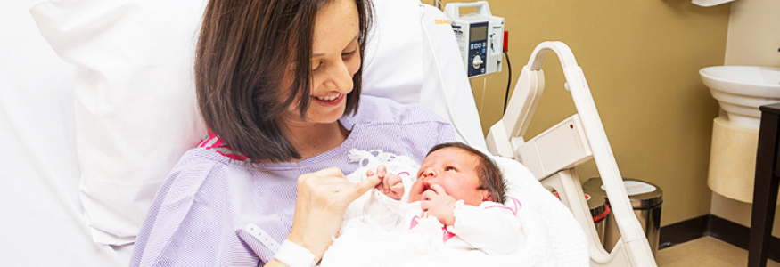

Maternidad
Nuestros servicios de maternidad se distinguen por su profesionalismo y calidez
en la atención, respaldados por la
experiencia de un grupo de médicos y
enfermeras.

Planes de Maternidad
• Parto vaginal
• Parto vaginal con anestesia epidural
• Parto por cesárea con anestesia epidural
• Parto múltiple (vaginal o por cesárea)
El plan incluye los siguientes servicios:
- ✓ Uso de sala de parto (60 minutos) o sala de cirugía (90 minutos).
- ✓ Utilización de sala de recuperación para cesárea (60 minutos).
- ✓ Insumos y medicamentos contemplados como básicos y necesarios que se usan en el parto, post-parto y durante la hospitalización de la madre y recién nacido.
- ✓ Uso de incubadora abierta durante la primera hora.
- ✓ Un día de internamiento.
- ✓ Cuidados del recién nacido a cargo de enfermeras especializadas.
- ✓ Asistencia en las necesidades personales, baño asistido, higiene y confort, aseo perineal y educación para la salud.
-
✓ Asesoría sobre el cuidado del ombligo y la piel, vacunación,
tamizaje,
promoción
de
la lactancia materna,
posiciones de amamantamiento y prevención de problemas (pezones agrietados, invertidos, mastitis y ductos
obstruidos). -
✓ Aplicación de vacuna B.C.G. y primera dosis de la hepatitis B,
vitamina K, Coombs directo, hemograma, grupo y
factor Rh del bebé. - ✓ Implementos para el cuidado y baño del niño.
- ✓ Tamizaje auditivo para el bebé.
- ✓ Uso del fotobilirrubinómetro en una ocasión para el niño.
-
✓ Alimentación de la madre (desayuno, almuerzo y cena); para el
acompañante
una
alimentación a escoger:
desayuno, almuerzo o cena. - ✓ MIS PRIMEROS RECUERDOS: incluye un CD con fotos de la familia y el recién nacido.
- ✓ Parqueo gratuito.
Atención del Parto:
La sala de partos cuenta con un ambiente privado y cálido, adecuada para el
nacimiento,
donde nos encargamos del
bienestar del niño y su madre, la cual puede estar
acompañada por
una persona de su confianza durante todo el
proceso.
Sala de Monitoreo Fetal:
Realizado por enfermeras obstetras, quienes valoran los resultados y los reportan a los médicos tratantes.
Clínica de Lactancia Materna
Asesoramos en temas relacionados con:
Alimentación del recién nacido
Técnicas y posiciones para amamantar
Complicaciones con los pechos
Estimulación y producción de leche materna
Beneficios de la lactancia materna
Atención a madres adolescentes
Extracción y almacenamiento de la leche materna
Situaciones especiales
Curso de preparación para la Maternidad y Paternidad
Dirigido a aquellas familias gestantes que desean adquirir conocimiento necesario para afrontar de la mejor manera uno de los acontecimientos más transcendentales de la vida: la llegada de un nuevo integrante de la familia. El curso cuenta con la participación de diferentes profesionales, como nutricionista, médico ginecólogo, médico neonatólogo, equipo de fisioterapia y psicóloga, además de la enfermera obstetra, quienes brindan conferencias y aclaran las dudas de los participantes, lo que hace del curso una dinámica interactiva entre la familia y la institución.